RÉSUMÉ DES CARACTÉRISTIQUES DU PRODUIT
ANSM - Mis à jour le : 07/08/2014
COSOPT 20 mg/ml + 5 mg/ml, collyre en solution en récipient unidose
2. COMPOSITION QUALITATIVE ET QUANTITATIVE
Pour la liste complète des excipients, voir rubrique 6.1.
Collyre en solution en récipient unidose.
Solution claire, incolore ou presque, légèrement visqueuse, avec un pH entre 5,5 et 5,8 et une osmolarité de 242-323 mOsM.
4.1. Indications thérapeutiques
COSOPT unidose est indiqué dans le traitement de la pression intra-oculaire élevée (PIO) chez les patients présentant un glaucome à angle ouvert, ou un glaucome pseudo-exfoliatif, lorsqu'une monothérapie par bêta-bloquant administrée par voie oculaire est insuffisante.
4.2. Posologie et mode d'administration
La dose est d'une goutte de COSOPT unidose dans le cul-de-sac conjonctival de l'œil (des yeux) atteint(s), deux fois par jour.
En cas d'utilisation concomitante avec un autre collyre, COSOPT unidose et l'autre collyre doivent être administrés à 10 minutes d'intervalle au moins.
Ce médicament est une solution stérile qui ne contient pas de conservateur. La solution d’un récipient unidose doit être administrée immédiatement après ouverture dans l’un ou les yeux atteints. La stérilité ne pouvant être maintenue après l’ouverture du récipient unidose, la solution non utilisée doit être jetée immédiatement après administration.
Les patients doivent être avertis de se laver les mains avant utilisation et d’éviter de mettre en contact le récipient unidose avec l’œil ou les parties avoisinantes car cela pourrait provoquer une blessure oculaire (voir mode d’emploi).
Les patients doivent aussi être informés que les solutions ophtalmiques, incorrectement manipulées, peuvent être contaminées par des bactéries communes, connues pour entraîner des infections oculaires. L’usage de solutions contaminées peut provoquer des lésions graves de l’œil et par la suite une perte de vision.
Le passage systémique peut être réduit par l’occlusion lacrymo-nasale ou la fermeture des paupières pendant 2 minutes. Cette méthode peut contribuer à diminuer les effets indésirables systémiques et à augmenter l’activité au niveau locale.
Mode d’administration
Etant donné que différentes formes de récipients unidoses sont disponibles, les patients doivent être informés de l’utilisation correcte du récipient unidose. Se référer à la rubrique 6.6 pour les schémas et le mode d’emploi spécifiques à chaque forme.
Population pédiatrique
L'efficacité chez les patients pédiatriques n'a pas été établie.
La tolérance chez l’enfant de moins de 2 ans n’a pas été établie. (Voir rubrique 5.1 pour plus d’informations sur la tolérance chez l’enfant de 2 ans ou plus et de moins de 6 ans).
COSOPT unidose est contre-indiqué chez les patients ayant :
· une maladie réactive des voies aériennes incluant un asthme ou un antécédent d'asthme, ou une broncho-pneumopathie chronique obstructive sévère,
· une bradycardie sinusale, une maladie sinusale, un bloc sino-auriculaire, un bloc auriculo-ventriculaire de second ou troisième degré non contrôlé par un pacemaker, une insuffisance cardiaque patente, un choc cardiogénique,
· une insuffisance rénale sévère (ClCr<30 ml/min) ou une acidose hyperchlorémique,
· une hypersensibilité à l’un ou aux deux principes actifs ou à l'un des excipients mentionnés à la rubrique 6.1.
Les contre-indications ci-dessus proviennent de celles de chacun des constituants et ne sont pas uniquement spécifiques de l'association.
4.4. Mises en garde spéciales et précautions d'emploi
Réactions cardio-vasculaires/respiratoires
Comme pour d'autres médicaments à usage ophtalmique administrés par voie locale, le timolol passe dans la circulation générale. A cause du composé béta-adrénergique, le timolol, les mêmes types d’effets cardiovasculaires, pulmonaires et autres effets secondaires que ceux observés avec les bêta-bloquants pris par voie générale peuvent survenir. L’incidence des effets indésirables systémiques après instillation ophtalmique est inférieure à celle survenant après l’administration par voie générale. Pour la réduction de l’absorption systémique : voir rubrique 4.2.
Affections cardiaques
Les patients ayant des maladies cardiovasculaires (par exemple, coronaropathie, angor de Prinzmetal et insuffisance cardiaque) et sous traitement hypotenseur par bêta-bloquant doivent être évalués de manière critique et un traitement utilisant d’autres substances actives doit être envisagé.
Chez les patients ayant des maladies cardiovasculaires, les signes de détérioration de leur maladie ou la survenue d’effets secondaires doivent être surveillés.
Du fait de leur effet négatif sur le temps de conduction, les bêta-bloquants doivent être administrés avec prudence chez les patients ayant un bloc cardiaque du premier degré.
Affections vasculaires
Les patients ayant des troubles/désordres circulatoires sévères périphériques (par exemple formes sévères de la maladie ou du syndrome de Raynaud) doivent être traités avec prudence.
Affections respiratoires
Des réactions respiratoires, y compris le décès par bronchospasme chez des patients asthmatiques ont été rapportées après administration de bêta-bloquants ophtalmiques.
COSOPT unidose doit être utilisé avec prudence chez les patients ayant une broncho-pneumopathie chronique obstructive (BPCO) légère à modérée, et seulement si le bénéfice potentiel est supérieur au risque potentiel.
Insuffisance hépatique
Ce médicament n’a pas été étudié chez les patients présentant une insuffisance hépatique et doit donc être utilisé avec précaution chez de tels patients.
Immunologie et hypersensibilité
Comme pour tous les autres médicaments à usage ophtalmique administrés par voie locale, ce médicament peut passer dans la circulation générale.
Le dorzolamide contient un groupe sulfonamide qui existe également chez les sulfamides. Par conséquent, les mêmes types d'effets secondaires que ceux observés avec les sulfamides par voie générale peuvent survenir par voie locale, incluant des réactions sévères telles que syndrome de Stevens-Johnson et nécrolyse épidermique toxique. En cas de réactions graves ou d'hypersensibilité, ce médicament doit être arrêté.
Des effets secondaires oculaires, identiques à ceux observés avec un collyre à base de chlorhydrate de dorzolamide ont été observés avec ce médicament. Si de telles réactions surviennent, l'arrêt de COSOPT unidose doit être envisagé.
Les patients prenant des bêta-bloquants et ayant des antécédents d'atopie ou des antécédents de réactions anaphylactiques sévères à divers allergènes peuvent avoir des réactions plus intenses lors d'une provocation allergénique par contacts répétés avec ces allergènes et peuvent ne pas répondre aux doses habituelles d'adrénaline utilisées pour traiter de telles réactions anaphylactiques.
Traitement concomitant
L’effet sur la pression intra-oculaire ou les effets connus des bêta-bloquants systémiques peuvent être potentialisés lorsque le timolol est administré à des patients déjà traités par un bêta-bloquant systémique. La réponse de ces patients devra être étroitement surveillée. L’utilisation de 2 agents bêta-bloquants adminsitrés par voie locale n’est pas recommandée (voir rubrique 4.5).
L’utilisation du dorzolamide et des inhibiteurs de l’anhydrase carbonique oraux n’est pas recommandée.
Arrêt du traitement
Comme avec les bêta-bloquants utilisés par voie générale, s'il est nécessaire d'arrêter le timolol par voie ophtalmique chez des patients ayant une maladie coronarienne, le traitement sera interrompu progressivement.
Autres effets des bêta-bloquants
Hypoglycémie/diabète
Les bêta-bloquants doivent être administrés avec prudence chez les patients sujets à une hypoglycémie spontanée ou chez des patients atteints d’un diabète instable, car les bêta-bloquants peuvent masquer les signes et symptômes d’hypoglycémie aiguë.
Les bêta-bloquants peuvent également masquer les signes d'hyperthyroïdie. Un arrêt brutal du traitement par bêta-bloquants peut précipiter une aggravation des symptômes.
Affections de la cornée
Les bêta-bloquants topiques peuvent induire une sécheresse oculaire. Les patients ayant des affections de la cornée doivent être traités avec prudence.
Anesthésie chirurgicale
Les préparations ophtalmiques contenant des bêta-bloquants peuvent bloquer les effets généraux des bêta-agonistes, par exemple l’adrénaline. Les anesthésistes doivent être informés lorsque le patient est traité par le timolol.
Le traitement par bêta-bloquants peut aggraver les symptômes d’une myasthénie.
Autres effets de l'inhibition de l'anhydrase carbonique
Le traitement par inhibiteurs de l'anhydrase carbonique par voie générale a été associé à des lithiases urinaires résultant de troubles acidobasiques, particulièrement chez des patients ayant un antécédent de calculs rénaux. Même si l'on n'a pas observé de troubles acidobasiques avec COSOPT multidose (formulation avec conservateur), des lithiases urinaires ont été rarement rapportées. COSOPT unidose (formulation sans conservateur) contient un inhibiteur de l'anhydrase carbonique qui est absorbé par voie générale, les patients ayant un antécédent de calculs rénaux peuvent donc présenter un risque accru de lithiases urinaires lors de l'utilisation de ce médicament.
Autres
La prise en charge des patients ayant un glaucome aigu par fermeture de l'angle nécessite en plus des agents hypotenseurs par voie ophtalmique d'autres mesures thérapeutiques. COSOPT unidose n'a pas été étudié chez les patients porteurs d'un glaucome aigu par fermeture de l'angle.
Un œdème cornéen et une décompensation irréversible de la cornée ont été décrits chez des patients présentant une altération chronique préexistante de la fonction cornéenne et/ou ayant des antécédents de chirurgie intra-oculaire lorsqu'ils sont traités par le dorzolamide. Les patients ayant un faible nombre de cellules endothéliales ont un risque accru de développer un œdème cornéen. Le dorzolamide par voie locale doit être utilisé avec prudence chez de tels patients.
Un décollement de la choroïde a été rapporté au cours de l'administration de traitements diminuant la sécrétion de l'humeur aqueuse (par exemple timolol, acétazolamide) après chirurgie filtrante.
Comme avec d'autres antiglaucomateux, on a observé chez certains patients une diminution de la réponse au maléate de timolol en collyre lors de traitements prolongés. Cependant, dans des études cliniques au cours desquelles 164 patients ont été suivis pendant au moins trois ans, aucune différence significative de la pression intra-oculaire moyenne n'a été observée après stabilisation initiale.
Utilisation de lentilles de contact
Ce médicament (formulation sans conservateur) n'a pas été étudié chez les patients porteurs de lentilles de contact.
Population pédiatrique
Voir rubrique 5.1.
4.5. Interactions avec d'autres médicaments et autres formes d'interactions
Aucune étude spécifique d'interactions médicamenteuses n'a été faite avec COSOPT unidose.
Dans une étude clinique, ce médicament a été utilisé de façon concomitante sans interaction indésirable patente avec les médicaments suivants: inhibiteurs de l'enzyme de conversion, inhibiteurs calciques, diurétiques, anti-inflammatoires non stéroïdiens dont l'aspirine, et des hormones (par exemple estrogènes, insuline, thyroxine).
Il existe un risque d'effets additifs de survenue d'hypotension et/ou de bradycardie marquée lorsqu’un collyre bêta-bloquant est administré en même temps que des inhibiteurs calciques par voie orale, des médicaments entraînant une diminution des catécholamines, des bêta-bloquants, des antiarythmiques (y compris l'amiodarone), des digitaliques, des parasympathomimétiques, de la guanéthidine, des narcotiques et des inhibiteurs de la monoamine oxydase (IMAO).
Une potentialisation des effets systémiques bêta-bloquants (par exemple diminution de la fréquence cardiaque, dépression) a été rapportée lors de traitements associant les inhibiteurs du CYP2D6 (par ex. quinidine, fluoxétine, naroxétine) et le timolol.
Bien que COSOPT (formule avec conservateur) seul ait peu ou pas d'effet sur le diamètre pupillaire, on a rapporté occasionnellement des cas de mydriase résultant de l'utilisation concomitante de collyre bêta-bloquant et d'épinéphrine (adrénaline).
Les bêta-bloquants peuvent augmenter l'effet hypoglycémiant des antidiabétiques.
Les bêta-bloquants par voie orale peuvent exacerber le rebond hypertensif qui peut suivre l'arrêt de la clonidine.
COSOPT unidose ne doit pas être utilisé pendant la grossesse.
Dorzolamide
Il n'y a pas de donnée clinique disponible sur l'utilisation chez la femme enceinte.
Le dorzolamide a entraîné des effets tératogènes chez le lapin à des doses maternotoxiques (voir rubrique 5.3).
Timolol
Il n’y a pas de données suffisantes d’utilisation du timolol chez la femme enceinte. Le timolol ne doit pas être administré lors de la grossesse sauf en cas de nécessité absolue. Pour la réduction de l’absorption systémique, voir rubrique 4.2.
Les études épidémiologiques n’ont pas mis en évidence d’effet tératogène, mais ont montré un risque de retard de croissance intra-utérine lorsque les bêta-bloquants sont administrés par voie orale. De plus, des signes et symptômes d’un effet bêta-bloquant (ex. bradycardie, hypotension, détresse respiratoire et hypoglycémie) ont été observés chez des nouveau-nés, après administration de béta-bloquants jusqu’à l’accouchement. Si ce médicament est administré jusqu’à l’accouchement, le nouveau-né doit être surveillé attentivement durant les premiers jours de la vie.
Allaitement
Il n'y a pas de données concernant l'excrétion de dorzolamide dans le lait maternel. Chez des rates en période de lactation recevant du dorzolamide, on a observé une diminution du poids chez les descendants.
Les bêta-bloquants sont excrétés dans le lait maternel. Cependant, aux doses thérapeutiques du timolol en collyre, il est peu problable qu’une quantité suffisante soit présente dans le lait pour produire les symptômes cliniques des bêta-bloquants chez le nourrisson. Pour la réduction de l’absorption systémique, voir rubrique 4.2. Si le traitement avec COSOPT unidose est nécessaire, alors l'allaitement n'est pas recommandé.
4.7. Effets sur l'aptitude à conduire des véhicules et à utiliser des machines
Aucune étude sur la capacité à conduire des véhicules et à utiliser des machines n'a été menée. Des effets indésirables possibles tels que vision trouble, peuvent altérer l'aptitude de certains patients à conduire et/ou à utiliser des machines.
Au cours des études cliniques, 1 035 patients ont été traités par COSOPT multidose (formulation avec conservateur). Approximativement 2,4 % d'entre eux ont arrêté le traitement par COSOPT multidose (formulation avec conservateur) en raison d'événements indésirables oculaires ; approximativement 1,2 % des patients ont arrêté le traitement en raison d'événements indésirables locaux évocateurs d'allergie ou d'hypersensibilité (tels que inflammation de la paupière et conjonctivite).
COSOPT unidose (formulation sans conservateur) a montré un profil de sécurité d’emploi similaire à celui de COSOPT multidose (formulation avec conservateur) dans une étude clinique comparative, en double-insu, à doses multiples.
Comme d'autres médicaments à usage ophtalmique administrés par voie locale, le timolol passe dans la circulation générale. Cela peut induire les mêmes types d'effets indésirables que ceux survenant après administration par voie générale de bêta-bloquants. L'incidence des effets indésirables systémiques après une instillation ophtalmique est plus faible qu'après une administration par voie systémique.
Les effets indésirables suivants ont été rapportés avec COSOPT unidose ou l’un de ses composants au cours des études cliniques ou depuis la mise sur le marché :
Très fréquent (≥ 1/10), fréquent (≥ 1/100, <1/10), peu fréquent (≥ 1/1 000, <1/100) et rare (≥ 1/10 000, <1/1 000), fréquence indéterminée (ne peut être estimée sur la base des données disponibles).
|
Classes de systèmes d'organes (MedDRA) |
Formule |
Très fréquent |
Fréquent |
Peu fréquent |
Rare |
Indéterminé** |
|
Affections du système immunitaire |
COSOPT unidose |
|
|
|
signes et symptômes de réactions allergiques, incluant angio-œdème, urticaire, prurit, rash, anaphylaxie |
|
|
|
Maléate de timolol, collyre en solution |
|
|
|
signes et symptômes de réactions allergiques, incluant angio-œdème, urticaire, rash local et général, anaphylaxie |
prurit |
|
Troubles du métabolisme et de la nutrition |
Maléate de timolol, collyre en solution |
|
|
|
|
hypoglycémie |
|
Affections psychiatriques |
Maléate de timolol, collyre en solution |
|
|
dépression* |
insomnies*, cauchemars*, pertes de mémoire |
|
|
Affections du système nerveux |
Chlorhydrate de dorzolamide, collyre en solution |
|
céphalées* |
|
étourdissements*, paresthésies* |
|
|
|
Maléate de timolol, collyre en solution |
|
céphalées* |
étourdissements*, syncope* |
paresthésies*, aggravation des signes et symptômes de myasthénie, diminution de la libido*, accident vasculaire cérébral*, ischémie cérébrale |
|
|
Affections oculaires |
COSOPT unidose |
brûlures et picotements |
hyperhémie conjonctivale, vision trouble, érosion de la cornée, démangeaisons oculaires, larmoiement |
|
|
|
|
|
Chlorhydrate de dorzolamide, collyre en solution |
|
inflammation palpébrale*, irritation palpébrale* |
iridocyclite* |
irritations incluant rougeur*, douleur*, lésions crouteuses palpébrales*, myopie transitoire (qui a disparu à l'arrêt du traitement), œdème cornéen*, hypotonie oculaire*, décollement de la choroïde (après chirurgie filtrante)* |
|
|
|
Maléate de timolol, collyre en solution |
|
signes et symptômes d'irritation oculaire comprenant blépharites*, kératites*, hypoesthésie cornéenne et sécheresse oculaire*, |
troubles visuels comprenant des modifications de la réfraction (dues parfois à l'arrêt du traitement par les myotiques)* |
ptosis, diplopie, décollement de la choroïde (après chirurgie filtrante)* (voir rubrique 4.4 mises en garde spéciales et précautions d'emploi) |
démangeaisons, larmoiement, rougeur, vision trouble, érosion de la cornée |
|
Affections de l'oreille et du labyrinthe |
Maléate de timolol, collyre en solution |
|
|
|
acouphènes* |
|
|
Affections cardiaques |
Maléate de timolol, collyre en solution |
|
|
bradycardie |
douleur thoracique*, palpitations*, œdème*, arythmie*, insuffisance cardiaque congestive*, arrêt cardiaque*, bloc cardiaque |
bloc auriculo-ventriculaire, insuffisance cardiaque |
|
Affections vasculaires |
Maléate de timolol, collyre en solution |
|
|
|
hypotension*, claudication, phénomène de Raynaud*, froideur des extrémités* |
|
|
Affections respiratoires, thoraciques et médiastinales |
COSOPT unidose |
|
sinusite |
|
essoufflement, insuffisance respiratoire, rhinite, rarement bronchospasme |
|
|
|
Chlorhydrate de dorzolamide, collyre en solution |
|
|
|
épistaxis* |
|
|
|
Maléate de timolol, collyre en solution |
|
|
dyspnée* |
bronchospasme (surtout chez les patients ayant une maladie bronchospastique pré-existante)*, insuffisance respiratoire, toux* |
|
|
Affections gastro-intestinales |
COSOPT unidose |
dysgueusie |
|
|
|
|
|
|
Chlorhydrate de dorzolamide, collyre en solution |
|
nausées* |
|
irritation de la gorge, sécheresse buccale* |
|
|
|
Maléate de timolol, collyre en solution |
|
|
nausées*, dyspepsie* |
diarrhée, sécheresse buccale*, |
dysgueusie, douleur abdominale, vomissements |
|
Affections de la peau et du tissu sous-cutané |
COSOPT unidose |
|
|
|
dermite de contact, syndrome de Stevens-Johnson, nécrolyse épidermique toxique |
|
|
|
Chlorhydrate de dorzolamide, collyre en solution |
|
|
|
éruption* |
|
|
|
Maléate de timolol, collyre en solution |
|
|
|
alopécie*, éruptions psoriasiformes ou aggravation d'un psoriasis*, |
éruption cutanée |
|
Affections musculo-squelettiques et systémiques |
Maléate de timolol, collyre en solution |
|
|
|
lupus érythémateux disséminé |
myalgie |
|
Affections du rein et des voies urinaires |
COSOPT unidose |
|
|
lithiase urinaire |
|
|
|
Affections des organes de reproduction et du sein |
Maléate de timolol, collyre en solution |
|
|
|
maladie de La Peyronie*, diminution de la libido |
dysfonctionnement sexuel |
|
Troubles généraux et anomalies au site d'administration |
Chlorhydrate de dorzolamide, collyre en solution |
|
asthénie/fatigue* |
|
|
|
|
|
Maléate de timolol, collyre en solution |
|
|
asthénie/fatigue* |
|
|
* Ces effets indésirables ont également été observés avec COSOPT multidose (formulation avec conservateur) depuis sa mise sur le marché.
** D'autres effets indésirables ont également été observés avec des bêta-bloquants ophtalmiques et peuvent potentiellement survenir avec COSOPT unidose.
Déclaration des effets indésirables suspectés
La déclaration des effets indésirables suspectés après autorisation du médicament est importante. Elle permet une surveillance continue du rapport bénéfice/risque du médicament. Les professionnels de santé déclarent tout effet indésirable suspecté via le système national de déclaration : Agence nationale de sécurité du médicament et des produits de santé (ANSM) et réseau des Centres Régionaux de Pharmacovigilance - Site internet : www.ansm.sante.fr
Il n'existe pas de données chez l'homme concernant un surdosage par ingestion accidentelle ou volontaire de COSOPT multidose ou COSOPT unidose.
Symptômes
Il y a eu des cas de surdosage accidentel avec le maléate de timolol en collyre se traduisant par des effets systémiques identiques à ceux observés avec les bêta-bloquants par voie générale tels que étourdissements, céphalées, essoufflement, bradycardie, bronchospasme, et arrêt cardiaque. Les symptômes les plus fréquents observés avec un surdosage en dorzolamide sont un déséquilibre électrolytique, l'apparition d'une acidose et des effets possibles sur le système nerveux central.
Il n'existe qu'un nombre limité de données disponibles chez l'homme concernant un surdosage par ingestion accidentelle ou volontaire de chlorhydrate de dorzolamide. Les effets suivants ont été rapportés à la suite d'une ingestion orale: somnolence; en application locale: nausées, étourdissements, céphalées, fatigue, rêves anormaux et dysphagie.
Traitement
Le traitement doit être symptomatique et adapté. Le ionogramme sanguin (en particulier le potassium) et le pH sanguin doivent être surveillés. Les études ont montré que le timolol n'est pas facilement dialysable.
5. PROPRIETES PHARMACOLOGIQUES
5.1. Propriétés pharmacodynamiques
Classe pharmacothérapeutique : antiglaucomateux et myotiques, bêta-bloquants, Timolol, associations.
Code ATC S01ED51
Mécanisme d'action
COSOPT unidose est une association de deux constituants : le chlorhydrate de dorzolamide et le maléate de timolol. Chacun de ces deux constituants diminue la pression intra-oculaire élevée en réduisant la sécrétion d'humeur aqueuse par des mécanismes d'action différents.
Le chlorhydrate de dorzolamide est un puissant inhibiteur de l'anhydrase carbonique humaine de type II. L'inhibition de l'anhydrase carbonique dans les procès ciliaires de l'œil diminue la sécrétion d'humeur aqueuse, en ralentissant probablement la formation des ions bicarbonates avec une diminution secondaire du transport du sodium et des liquides. Le maléate de timolol est un bêta-bloquant non cardio-sélectif. Le mécanisme d'action précis du maléate de timolol dans la réduction de la pression intra-oculaire n'est pas clairement établi à l'heure actuelle, bien qu'une étude avec la fluorescéine et des études de tonographie indiquent que l'action principale peut être une réduction de la formation de l'humeur aqueuse. Cependant, dans quelques études une augmentation légère de l'écoulement de l'humeur aqueuse a également été observée. L'association de ces deux agents a un effet additif sur la réduction de la pression intra-oculaire (PIO) par rapport à chacun des constituants administrés séparément.
Après administration locale, COSOPT unidose diminue l'élévation de la pression intra-oculaire, associée ou non à un glaucome. Une pression intra-oculaire élevée est un facteur de risque majeur dans la pathogénie des altérations du nerf optique et de la perte du champ visuel due au glaucome. Ce médicament réduit la pression intra-oculaire sans avoir les effets secondaires des myotiques comme la cécité nocturne, les spasmes d'accommodation et la contraction pupillaire.
Effets pharmacodynamiques
Effets cliniques
Des études cliniques allant jusqu'à 15 mois ont été menées pour comparer l'effet sur la réduction de la PIO de COSOPT multidose, administré deux fois par jour (le matin et le soir au coucher), par rapport à celui de timolol 0,5 % et de dorzolamide 2,0 % seuls ou en association, chez des patients présentant un glaucome ou une hypertension oculaire et pour lesquels un traitement associé a été considéré dans les essais comme adapté. Des patients non traités et des patients insuffisamment contrôlés par le timolol en monothérapie ont été inclus.
La majorité des patients étaient traités par collyre bêta-bloquant en monothérapie avant d'être enrôlés dans l'étude. Dans une analyse groupée des études, l'effet de COSOPT multidose administré deux fois par jour sur la réduction de la PIO était supérieur à celui d'une monothérapie par dorzolamide 2 % administré trois fois par jour ou par timolol 0,5 % administré deux fois par jour. L'effet de COSOPT multidose administré deux fois par jour sur la réduction de la PIO était similaire à celui d'un traitement concomitant de dorzolamide et de timolol administré deux fois par jour. L'effet de COSOPT multidose administré deux fois par jour sur la réduction de la pression intra-oculaire a été démontré à différents moments de la journée et cet effet s'est maintenu pendant l'administration au long cours.
Dans une étude clinique, en double-insu, en groupes parallèles, chez 261 patients ayant une pression intra-oculaire élevée ≥ 22 mm Hg dans l’un ou les deux yeux, comparant COSOPT unidose (formulation sans conservateur) à COSOPT multidose (formulation avec conservateur), COSOPT unidose a eu un effet sur la diminution de la pression intra-oculaire (PIO) équivalent à celui de COSOPT multidose. Le profil de sécurité de COSOPT unidose a été similaire à celui de COSOPT multidose.
Population pédiatrique
Une étude contrôlée de 3 mois a été conduite, avec comme objectif principal de documenter la tolérance du chlorhydrate de dorzolamide en solution ophtalmique à 2 % chez l’enfant de moins de 6 ans. Dans cette étude, 30 patients de 2 ans ou plus et de moins de 6 ans, dont la pression intra-oculaire n’était pas contrôlée de façon suffisante par dorzolamide ou timolol en monothérapie ont reçu COSOPT dans une phase en ouvert. L'efficacité chez ces patients n’a pas été établie. Dans ce petit groupe de patients, l’administration biquotidienne de COSOPT a généralement été bien tolérée, 19 patients ont terminé le traitement et 11 l’ont arrêté pour intervention chirurgicale, modification du traitement médical, ou autres raisons.
5.2. Propriétés pharmacocinétiques
Chlorhydrate de dorzolamide
Contrairement aux inhibiteurs de l'anhydrase carbonique par voie orale, l'administration locale de chlorhydrate de dorzolamide permet une action directe du principe actif sur l'œil à des doses substantiellement plus basses et donc une exposition systémique plus faible. Dans les essais cliniques, la conséquence a été une réduction de la PIO sans perturbation de l'équilibre acidobasique ni les troubles hydroélectrolytiques caractéristiques des inhibiteurs de l'anhydrase carbonique administrés par voie orale.
Par voie locale, le dorzolamide passe dans la circulation générale. Pour évaluer la possibilité d'une inhibition de l'anhydrase carbonique systémique après administration locale, les concentrations du médicament et de ses métabolites ont été mesurées dans les globules rouges et le plasma, ainsi que l'inhibition de l'anhydrase carbonique dans les globules rouges. Lors d'une administration chronique, le dorzolamide s'accumule dans les globules rouges par suite d'une liaison sélective à l'AC-II alors que des concentrations extrêmement faibles du principe actif sous forme libre sont maintenues dans le plasma. Le principe actif est transformé en métabolite N-déséthyl qui inhibe l'AC-II de façon moins puissante mais inhibe aussi une isoenzyme moins active (l'AC-I). Ce métabolite s'accumule également dans les globules rouges où il se lie principalement avec l'AC-I. Le dorzolamide se fixe modérément aux protéines plasmatiques (environ 33 %). Le dorzolamide est principalement excrété inchangé dans les urines; son métabolite est aussi éliminé dans les urines. Après le traitement, le dorzolamide se libère des globules rouges de façon non linéaire, ce qui entraîne une diminution rapide de la concentration initiale du principe actif suivie d'une phase d'élimination plus lente avec une demi-vie d'environ quatre mois.
Lorsque le dorzolamide a été administré par voie orale pour simuler une exposition systémique maximale consécutive à une administration oculaire au long cours, l'état d'équilibre a été atteint en 13 semaines. A l'état d'équilibre, il n'y avait virtuellement pas de principe actif sous forme libre ni de métabolite dans le plasma; l'inhibition de l'AC dans les globules rouges a été inférieure à celle nécessaire à l'obtention d'un effet pharmacologique sur la fonction rénale ou la respiration. Des résultats identiques de pharmacocinétique ont été observés après administration locale prolongée de chlorhydrate de dorzolamide. Néanmoins, quelques patients âgés présentant une insuffisance rénale (clairance de la créatinine estimée à 30-60 ml/min.) ont eu des concentrations en métabolite plus élevées dans les globules rouges, mais aucune différence significative sur l'inhibition de l'anhydrase carbonique et aucun effet secondaire systémique cliniquement significatif n'ont été imputés directement à ces données.
Maléate de timolol
Dans une étude sur les concentrations plasmatiques du principe actif chez six patients, l'exposition systémique au timolol a été déterminée après administration locale de maléate de timolol solution ophtalmique à 0,5 % deux fois par jour. Les concentrations plasmatiques moyennes après la prise du matin étaient en moyenne de 0,46 ng/ml et de 0,35 ng/ml après la prise de l'après-midi.
5.3. Données de sécurité préclinique
Le profil de tolérance oculaire et générale des constituants pris séparément est bien établi.
Dorzolamide
Chez des lapins ayant reçu des doses maternotoxiques de dorzolamide associées à une acidose métabolique, des malformations des corps vertébraux ont été observées.
Timolol
Des études chez l'animal n'ont pas montré d'effets tératogènes.
De plus, aucun effet secondaire oculaire chez des animaux traités par voie locale avec du chlorhydrate de dorzolamide et du maléate de timolol administrés seuls ou simultanément n'a été observé. Les études in vitro et in vivo effectuées avec chacun des constituants n'ont pas révélé de pouvoir mutagène.
Par conséquent, aucun risque significatif en matière de tolérance n'est attendu chez l'homme aux doses thérapeutiques de COSOPT.
Hydroxyéthylcellulose, mannitol (E421), citrate de sodium (E331), hydroxyde de sodium (E524) (pour ajustement du pH), eau pour préparations injectables.
Sans objet.
COSOPT unidose ne doit pas être utilisé plus de 15 jours après la première ouverture du sachet. Jetez tous les récipients unidoses non utilisés après ce délai.
Jetez immédiatement après la première utilisation chaque récipient unidose.
6.4. Précautions particulières de conservation
A conserver à une température ne dépassant pas 30°C.
Ne pas congeler.
A conserver dans l'emballage extérieur d'origine, à l'abri de la lumière.
6.5. Nature et contenu de l'emballage extérieur
Conditionnements :
30 x 0,2 ml (2 sachets de 15 récipients unidoses)
60 x 0,2 ml (4 sachets de 15 récipients unidoses)
120 x 0,2 ml (8 sachets de 15 récipients unidoses)
A noter : Différentes formes de récipients unidoses sont disponibles. Se référer à la rubrique 6.6 pour les schémas et le mode d’emploi spécifiques à chaque forme.
Toutes les présentations peuvent ne pas être commercialisées.
6.6. Précautions particulières d’élimination et de manipulation
Pas d'exigences particulières.
Mode d’emploi
Présentation 1
1. Ouvrez le sachet aluminium qui contient 15 récipients unidoses. Il y a trois plaquettes de 5 récipients unidoses chacune, dans le sachet. Ecrivez la date de la première ouverture sur le sachet.
2. Lavez-vous d’abord les mains, puis détachez un récipient unidose de la plaquette et ouvrez-le en tournant l’extrémité.
|
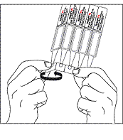
|
+ 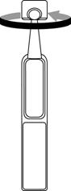
|
3. Inclinez la tête vers l’arrière et tirez légèrement la paupière inférieure vers le bas pour former une poche entre votre paupière et votre œil comme indiqué. Aucune partie du récipient unidose ne doit toucher votre œil ou les parties avoisinantes de l’œil.
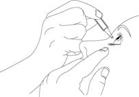
Si vous avez un doute sur la façon d’administrer votre médicament, demandez plus d’informations à votre médecin, votre pharmacien ou votre infirmière.
4. Mettez une goutte dans l’œil ou les yeux atteints comme indiqué par votre médecin. Ne clignez pas de l’œil pendant l’instillation de la goutte dans votre œil.
Chaque récipient unidose contient suffisamment de solution pour les deux yeux.
5. Le passage systémique peut être réduit par l’occlusion lacrymo-nasale ou la fermeture des paupières pendant 2 minutes. Cette méthode peut contribuer à diminuer les effets indésirables systémiques et à augmenter l’activité au niveau local.
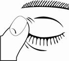
6. Après instillation de la goutte dans l’œil, jetez le récipient unidose utilisé même s’il reste de la solution pour éviter toute contamination du contenu du récipient unidose.
7. Conservez les récipients unidoses restants dans le sachet aluminium; ils doivent être utilisés dans les
15 jours qui suivent l’ouverture du sachet. 15 jours après avoir ouvert le sachet, s’il reste des récipients unidoses, ils doivent être jetés en toute sécurité, et un nouveau sachet doit être ouvert. Il est important d’utiliser ce collyre selon la prescription de votre médecin.
Présentation 2
1. Ouvrez le sachet qui contient 15 récipients unidoses. Il y a trois plaquettes de 5 récipients unidoses chacune, dans le sachet. Ecrivez la date de la première ouverture sur le sachet.
2. Lavez-vous d’abord les mains, puis détachez un récipient unidose de la plaquette et ouvrez-le en tournant l’extrémité.
Veuillez noter que le récipient unidose ouvert présente des « ailettes » de chaque côté de l’embout, comme indiqué sur le schéma ci-dessous :
|
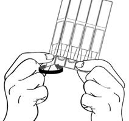 |
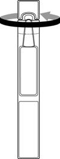 |
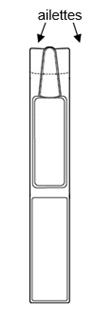 |
||
|
|
|
|
|||
3. Tenez le récipient unidose de sorte que les ailettes situées de chaque côté du récipient soient orientées vers chacun des coins de l’œil, horizontalement, comme indiqué dans les schémas ci-dessous. Inclinez la tête vers l’arrière et abaissez légèrement la paupière inférieure pour former une poche entre votre paupière et votre œil comme indiqué. Aucune partie du récipient unidose ne doit toucher votre œil ou les parties avoisinantes de l’œil.
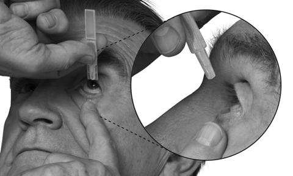
Si vous avez un doute sur la façon d’administrer votre médicament, demandez plus d’information à votre médecin, votre pharmacien ou votre infirmière.
4. Mettez une goutte dans l’œil ou les yeux atteints comme indiqué par votre médecin. Ne clignez pas de
l’œil pendant l’instillation de la goutte dans votre œil.
Chaque récipient unidose contient suffisamment de solution pour les deux yeux.
5 Le passage systémique peut être réduit par l’occlusion lacrymo-nasale ou la fermeture des paupières pendant 2 minutes. Cette méthode peut contribuer à diminuer les effets indésirables systémiques et à augmenter l’activité au niveau local.
6. Après instillation de la goutte dans l’œil, jetez le récipient unidose utilisé même s’il reste de la solution pour éviter toute contamination du contenu du récipient unidose.
7. Conserver les récipients unidoses restants dans le sachet ; ils peuvent être utilisés dans les 15 jours qui suivent l’ouverture du sachet. 15 jours après avoir ouvert le sachet, s’il reste des récipients unidoses, ils doivent être jetés en toute sécurité, et un nouveau sachet doit être ouvert. Il est important d’utiliser ce collyre selon la prescription de votre médecin.
Presentation 3
1. Ouvrez le sachet qui contient 15 récipients unidoses. Il y a trois plaquettes de 5 récipients unidoses chacune, dans le sachet. Ecrivez la date de la première ouverture sur le sachet.
2. Lavez-vous d’abord les mains, puis détachez un récipient unidose de la plaquette et ouvrez-le en tournant l’extrémité.
Veuillez noter que le récipient unidose ouvert présente des « ailettes » de chaque côté de l’embout, comme indiqué sur le schéma ci-dessous :
|
|
||
|
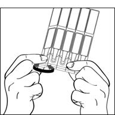 |
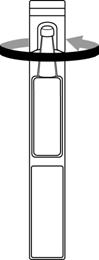 |
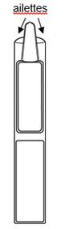 |
3. Tenez le récipient unidose de sorte que les ailettes situées de chaque côté du récipient soient orientées vers chacun des coins de l’œil, horizontalement, comme indiqué dans les schémas ci-dessous. Inclinez la tête vers l’arrière et abaissez légèrement la paupière inférieure pour former une poche entre votre paupière et votre œil comme indiqué. Aucune partie du récipient unidose ne doit toucher votre œil ou les parties avoisinantes de l’œil.
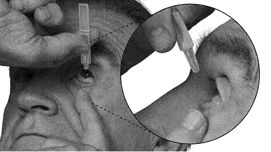
Si vous avez un doute sur la façon d’administrer votre médicament, demandez plus d’information à votre médecin, votre pharmacien ou votre infirmière.
4. Mettez une goutte dans l’œil ou les yeux atteints comme indiqué par votre médecin. Ne clignez pas de l’œil pendant l’instillation de la goutte dans votre œil.
Chaque récipient unidose contient suffisamment de solution pour les deux yeux.
5. Le passage systémique peut être réduit par l’occlusion lacrymo-nasale ou la fermeture des paupières pendant 2 minutes. Cette méthode peut contribuer à diminuer les effets indésirables systémiques et à augmenter l’activité au niveau local.
6. Après instillation de la goutte dans l’œil, jetez le récipient unidose utilisé même s’il reste de la solution pour éviter toute contamination du contenu du récipient unidose.
7. Conserver les récipients unidoses restants dans le sachet ; ils peuvent être utilisés dans les 15 jours qui suivent l’ouverture du sachet. 15 jours après avoir ouvert le sachet, s’il reste des récipients unidoses, ils doivent être jetés en toute sécurité, et un nouveau sachet doit être ouvert. Il est important d’utiliser ce collyre selon la prescription de votre médecin.
7. TITULAIRE DE L’AUTORISATION DE MISE SUR LE MARCHE
MSD FRANCE
34, avenue Leonard de Vinci
92400 COURBEVOIE
8. NUMERO(S) D’AUTORISATION DE MISE SUR LE MARCHE
· 377 056-6: 0,2 ml en récipient unidose (PEBD). Boîte de 30.
· 377 057-2: 0,2 ml en récipient unidose (PEBD). Boîte de 60.
· 377 058-9: 0,2 ml en récipient unidose (PEBD). Boîte de 120.
9. DATE DE PREMIERE AUTORISATION/DE RENOUVELLEMENT DE L’AUTORISATION
[à compléter par le titulaire]
10. DATE DE MISE A JOUR DU TEXTE
[à compléter par le titulaire]
Sans objet.
12. INSTRUCTIONS POUR LA PREPARATION DES RADIOPHARMACEUTIQUES
Sans objet.
Liste I.